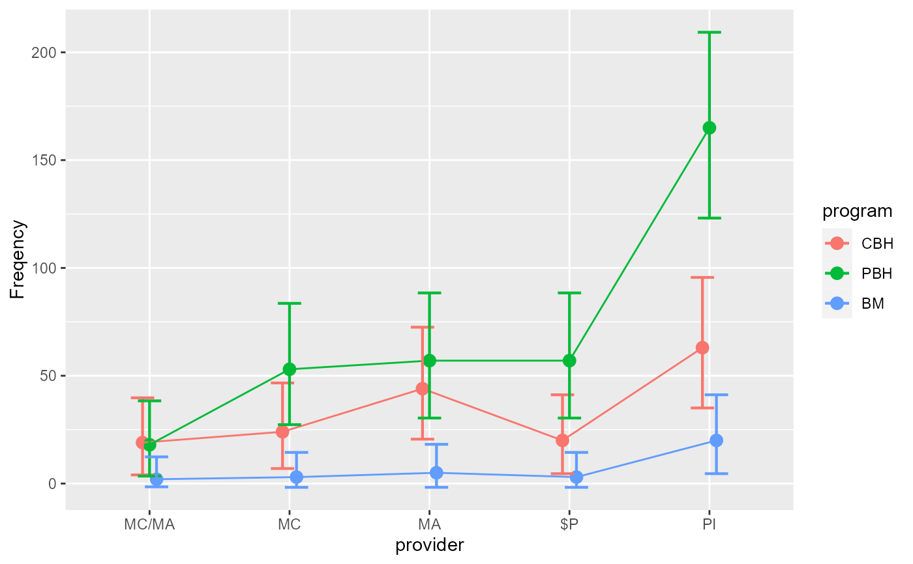

The data, taken from Landis et al. (2013)
, is a dataset where the
participants (n = 553) are classified according to two factors,
first, how modalities of care in a family
medicine residency program were given. The possible cases were Collocated Behavioral Health service (CBH), a Primary-Care Behavioral Health service (PBH) and a Blended Model (BM).
Second, how a patient’s care was financed:
Medicare (MC), Medicaid (MA), a mix of Medicare/Medicaid
(MC/MA), Personal insurance (PI), or Self-paid ($P). This
design therefore has 5 x 3 = 15 cells. It was thoroughly examined
in (Sharpe 2015)
and analyzed in (Laurencelle and Cousineau 2023)
.
LandisBarrettGalvin2013An object of class data.frame.
Landis SE, Barrett M, Galvin SL (2013).
“Effects of different models of integrated collaborative care in a family medicine residency program.”
Families, Systems and Health, 31, 264–273.
doi:10.1037/a0033410
.
Laurencelle L, Cousineau D (2023).
“Analysis of frequency tables: The ANOFA framework.”
The Quantitative Methods for Psychology, 19, 173--193.
doi:10.20982/tqmp.19.2.p173
.
Sharpe D (2015).
“Chi-square test is statistically significant: Now what?”
Practical Assessment, Research, and Evaluation, 20(1), 8.
# running the anofa
L <- anofa( obsfreq ~ provider * program, LandisBarrettGalvin2013)
# getting a plot
anofaPlot(L)

# the G table shows a significant interaction
summary(L)
#> G df Gcorrected pvalue etasq
#> Total 533.19 14 NA NA NA
#> provider 206.57 4 206.20 0.00000 0.2720
#> program 307.77 2 307.40 0.00000 0.3576
#> provider:program 18.85 8 18.69 0.01662 0.4909
# getting the simple effect
e <- emFrequencies(L, ~ program | provider )
## Getting some contrast by provider (i.e., on e)
f <- contrastFrequencies(e, list(
"(PBH & CBH) vs. BM"=c(1,1,-2)/2,
"PBH vs. CBH"=c(1,-1,0))
)